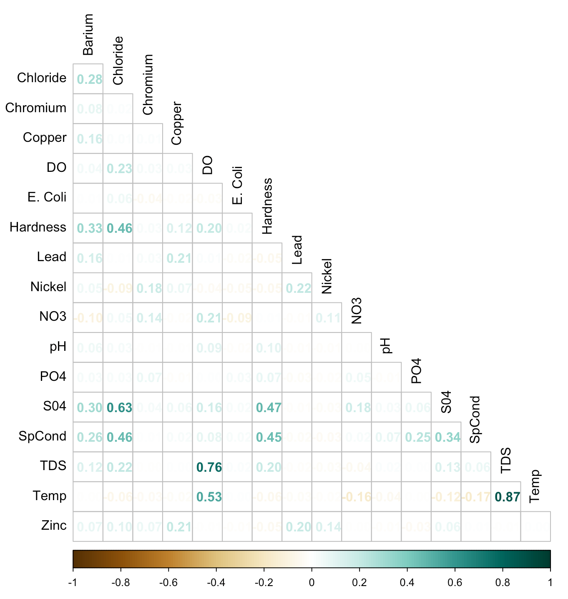
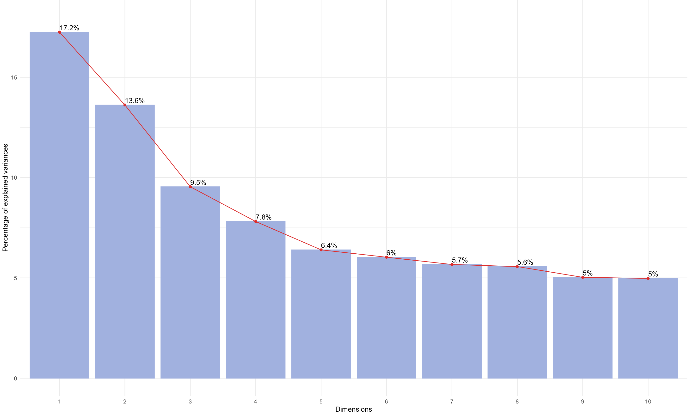
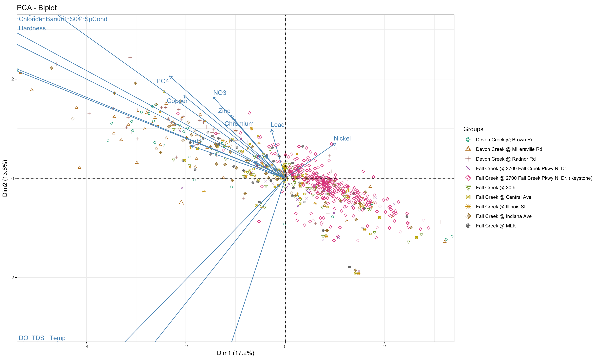

To start, following libraries were installed and loaded into R programming:
- library(readxl)
- library(tidyverse)
- library(dplyr)
- library(ggplot2)
- library(EFAtools)
- library(corrplot)
- library(gridExtra)
- library(xtable)
- library(vegan)
- library(factoextra)
- library(RColorBrewer)
- library(writexl)
- library(paletteer)
- library(ggfortify)
- library(ggrepel)
- library(wqindex)
- library(wqbc)
The data for Fall Creek was then loaded into R Programming with the following script:
fallcreek <- read_xlsx("~/Desktop/fallcreek.xlsx")
In this dataset, there are total 30 attributes and 753 rows. Some describe the ocation while others describe the measured pollution.
In order to perform a PCA, this dataset needs to be subsetted to only include water quality parameters (i.e. the last 22 on the above list).
wq_vars <- c("SpCond", "TDS", "DO", "pH", "Temp", "E. Coli", "Arsenic", "Barium", "Cadmium", "Chromium",
"Copper", "Lead", "Mercury", "Nickel", "Zinc", "Chloride", "NO2", "NO3" "PO4", "S04", "NH3" "Hardness")
pca_fallcreek <- fallcreek[wq_vars]
KMO (Kaiser-Meyer-Olkin) test
KMO(pca_eaglecreek)
KMO value = 0.613 after removing the following variables:
Bartlett test
cortest.bartlett(pca_eaglecreek)
p-value = 0, meaning we can reject the null hypothesis and perform a PCA because we have suitable data!
R makes it really easy to standardize your data. The following code was used:
pca_fallcreek1 <- pca_fallcreek %>%
mutate_all(~(scale(.) %>% as.vector))
R also makes it really easy to create a covariance matrix. The below code was used to make the table following:
ec.cor.table <- cor(pca_fallcreek1)
| SpCond | TDS | DO | pH | Temp | E. coli | Barium | Chromium | Copper | Lead | Nickel | Zinc | Chloride | NO3 | PO43- | SO42- | Hardness | |
|---|---|---|---|---|---|---|---|---|---|---|---|---|---|---|---|---|---|
| SpCond | 1.0000 | 0.0613 | 0.0832 | 0.0700 | -0.1654 | 0.0219 | 0.2593 | 0.0063 | 0.0234 | -0.0244 | -0.0347 | 0.0064 | 0.4639 | 0.0219 | 0.2498 | 0.3405 | 0.4515 |
| TDS | 0.0613 | 1.0000 | 0.7631 | 0.0189 | 0.8660 | 0.0176 | 0.1234 | -0.0037 | 0.0049 | -0.0150 | -0.0254 | -0.0077 | 0.2163 | -0.0434 | 0.0011 | 0.1261 | 0.1951 |
| DO | 0.0832 | 0.7631 | 1.0000 | 0.0924 | 0.5309 | -0.0281 | 0.0420 | 0.0350 | 0.0277 | 0.0122 | -0.0385 | -0.0060 | 0.2283 | 0.2072 | 0.0029 | 0.1600 | 0.2029 |
| pH | -0.0700 | 0.0189 | 0.0924 | 1.0000 | -0.0438 | -0.0161 | 0.0557 | -0.0086 | -0.0066 | -0.0101 | -0.0146 | -0.0147 | 0.0337 | -0.0010 | -0.0118 | 0.0311 | 0.0978 |
| Temp | -0.1654 | 0.8660 | 0.5309 | -0.0438 | 1.0000 | 0.0040 | -0.0017 | -0.0324 | -0.0229 | -0.0260 | -0.0187 | 0.0042 | -0.0605 | -0.1631 | -0.0049 | -0.1205 | -0.0550 |
| E. coli | 0.0219 | 0.0176 | -0.0281 | -0.0161 | 0.0040 | 1.0000 | 0.0082 | -0.0407 | -0.0197 | -0.0248 | -0.0450 | -0.0107 | 0.0553 | -0.0914 | 0.0339 | 0.0230 | 0.0231 |
| Barium | 0.2593 | 0.1234 | 0.0420 | 0.0557 | -0.0017 | 0.0082 | 1.0000 | 0.0832 | 0.1600 | 0.1578 | 0.0526 | 0.0710 | 0.2849 | -0.1041 | 0.0340 | 0.3046 | 0.3257 |
| Chromium | 0.0063 | -0.0037 | 0.0350 | -0.0086 | -0.0324 | -0.0407 | 0.0832 | 1.0000 | 0.0127 | 0.0283 | 0.1811 | 0.0675 | 0.0198 | 0.1405 | 0.0691 | 0.0376 | 0.0286 |
| Copper | 0.0234 | 0.0049 | 0.0277 | -0.0066 | -0.0229 | -0.0197 | 0.1600 | 0.0127 | 1.0000 | 0.2074 | 0.0671 | 0.2053 | 0.0113 | -0.0165 | -0.0109 | 0.0584 | 0.1237 |
| Lead | -0.0244 | -0.0150 | 0.0122 | -0.0101 | -0.0260 | -0.0248 | 0.1578 | 0.0283 | 0.2074 | 1.0000 | 0.2190 | 0.1971 | 0.0088 | -0.0140 | -0.0292 | -0.0102 | -0.0545 |
| Nickel | -0.0347 | -0.0254 | -0.0385 | -0.0146 | -0.0187 | -0.0450 | 0.0526 | 0.1811 | 0.0671 | 0.2190 | 1.0000 | 0.1392 | -0.0932 | 0.1085 | -0.0181 | -0.0258 | -0.0510 |
| Zinc | 0.0064 | -0.0077 | -0.0060 | -0.0147 | 0.0042 | -0.0107 | 0.0710 | 0.0675 | 0.2053 | 0.1971 | 0.1392 | 1.0000 | 0.1009 | -0.0038 | -0.0316 | 0.0622 | -0.0479 |
| Chloride | 0.4639 | 0.2163 | 0.2283 | 0.0337 | -0.0605 | 0.0553 | 0.2849 | 0.0198 | 0.0113 | 0.0088 | -0.0932 | 0.1009 | 1.0000 | 0.0453 | 0.0295 | 0.6273 | 0.4616 |
| NO3 | 0.0219 | -0.0434 | 0.2072 | -0.0010 | -0.1631 | -0.0914 | -0.1041 | 0.1405 | -0.0165 | -0.0140 | 0.1085 | -0.0038 | 0.0453 | 1.0000 | 0.0548 | 0.1787 | 0.0051 |
| PO43- | 0.2498 | 0.0011 | 0.0029 | -0.0118 | -0.0049 | 0.0339 | 0.0340 | 0.0691 | -0.0109 | -0.0292 | -0.0181 | -0.0316 | 0.0295 | 0.0548 | 1.0000 | 0.0609 | 0.0741 |
| SO42- | 0.3405 | 0.1261 | 0.1600 | 0.0311 | -0.1205 | 0.0230 | 0.3046 | 0.0376 | 0.0584 | -0.0102 | -0.0258 | 0.0622 | 0.6273 | 0.1787 | 0.0609 | 1.0000 | 0.4749 |
| Hardness | 0.4515 | 0.1951 | 0.2029 | 0.0978 | -0.0550 | 0.0231 | 0.3257 | 0.0286 | 0.1237 | -0.0545 | -0.0510 | -0.0479 | 0.4616 | 0.0051 | 0.0741 | 0.4749 | 1.0000 |
Because tables can be hardto read and analyze effieciently such as the one above, a corrplot was contstructed in R to visualized strong correlations between the variables (a.k.a the correlation matrix).
The following code was used to construct the plot:
fc.cor.plot <- corrplot(fc.cor.table, method = 'number', order = 'alphabet', type = 'lower', diag = FALSE,
col = COL2('BrBG'), tl.col = 'black')

Now, we can really see the correlations! Significant ones are any where r > 0.60. In this case, there are 3 strongly positively correlations.
Other observations include:
In R, there is nifty function that will calcuate everything you need for a PCA! That function is called
prcomp(). Not only does it calculate the eigenvectors and eigenvalues, but it also calculates the
principal components as well as other values.
The following code was used:
fc_pca <- prcomp(pca_fallcreek, scale = TRUE, center = TRUE)
With these results, visualization and analyses becomes quite easy!
Next, a scree plot will visualize the principal components. This will help us choose how many principal components to keep and to understand the data better. In order to do this, we have to answer the question:
"Where does the slope of the data flatten?"
Wherever the slope of the data flattens, those principal components are discarded.

Based on this plot, the slope of the data flattens after the 3rd principal component. Therefore, every principal component after the 3rd is discard, and we will focus on the first three from here on out!
We also know that based on the scree plot, 40.3% of the data is explained within the first 3 principal components.
Using the results calculated from the prcomp() function and from the scree plot, a following biplot was created
graphing principal component 1 vs principal component 2.
